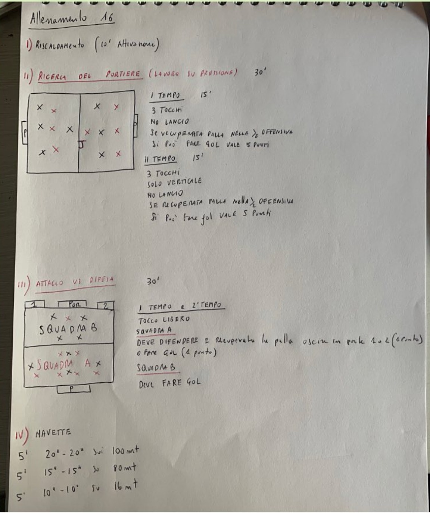

In campionato · Allenamento 16
GliImbattibili
Dai quaderni dell'allenatore, la seduta del lunedì della Juniores che ha vinto il campionato provinciale senza perdere una partita.

Dai quaderni dell'allenatore, la seduta del lunedì della Juniores che ha vinto il campionato provinciale senza perdere una partita.
| I | Riscaldamento Attivazione | 10' |
| II | Ricerca del portiere · lavoro sulla pressione 7 contro 7 + jolly · 2 tempi da 15' · 3 tocchi, niente lancio · gol dopo il recupero nella metà offensiva = 5 punti · nel 2° tempo solo verticale | 30' |
| III | Attacco contro difesa 2 tempi · tocco libero · la squadra A difende e riparte verso le porticine o la porta | 30' |
| IV | Navette 5' di 20"-20" sui 100 m · 5' di 15"-15" sugli 80 m · 5' di 10"-10" sui 16 m | 15' |
Obiettivo: la ricerca del portiere del precampionato diventa un lavoro sulla pressione. Senza lanci si deve arrivare al portiere palla a terra e il recupero alto vale molto di più.
Ogni squadra cerca di far arrivare la palla al portiere del lato che attacca. Il gol si può fare solo dopo un recupero nella metà offensiva.
Obiettivo: come nell'Allenamento 14, chi difende non deve solo recuperare palla ma anche uscire bene: verso le porticine laterali o verso la porta.
| 5' | 20" di corsa e 20" di recupero · navette sui 100 m |
| 5' | 15" di corsa e 15" di recupero · navette sugli 80 m |
| 5' | 10" di corsa e 10" di recupero · navette sui 16 m |